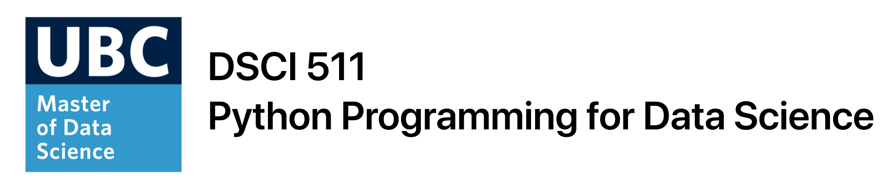
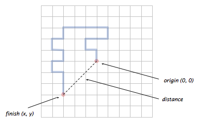

Lab 1: Python Basics, Loops & Functions¶
Tomas Beuzen, September 2020
In this lab, you’ll complete various exercises related to Python basics, loops & functions. Many of these exercises require you to combine multiple different Python data types, functions, and concepts to solve them.
Table of Contents
# These imports are required to build some of the questions in this lab and run tests.
# You will not have to use them in your solutions, but you do need to run this cell.
# We'll learn more about imports in a later lectuer.
import string
import numpy as np
from random import random
Exercise 1: Warming Up¶
1.1¶
rubric={autograde:1}
Given the list numbers below, use a for loop and if/else statement that squares the even numbers in numbers and cubes the odd numbers in numbers.
numbers = [1, 4, 7, 10]
for n in numbers:
pass # remove if providing a solution
# Your answer goes here.
1.2¶
rubric={autograde:1}
Given this sentence: “Make this sentence more Pythonic!”. Do the following:
Make all letters lowercase;
Replace spaces with underscores (
_);Remove punctuation.
sentence should look like this:
'make_this_sentence_more_pythonic'
Be sure to save your result back as the variable sentence.
sentence = "Make this sentence more Pythonic!"
# Your answer goes here.
1.3¶
rubric={autograde:1}
Combine all the values of the dictionary below (not the keys) into a single list called d_list. Your final list should contain a string, a list, and a float respectively and look like this:
['MDS 2020', [4, 2, 1], 3.141]
d = {"a": "MDS 2020",
"b": [4, 2, 1],
"c": 3.141}
d_list = None
# Your answer goes here.
1.4¶
rubric={autograde:1}
For the messy_list below, remove all duplicate values, sort them in ascending order and store in a new list variable called clean_list, which should look like:
[1, 2, 3, 4, 5, 6]
messy_list = [1, 1, 1, 2, 3, 4, 5, 5, 5, 6]
clean_list = None
# Your answer goes here.
Exercise 2: Treasure Hunt¶
For each of the following cases, index into the Python object to obtain the “T” (for Treasure). Your code should always print out just “T” at the end. In these questions, the goal is not to understand the code itself, which may be confusing. Instead, try to probe the types of the various objects. An example is shown below:
x = ("nothing", {-i : l for i, l in enumerate(letters)})
x[1][-19]
'T'
In the example above, type(x) would reveal that x is a tuple, and len(x) would reveal that it has two elements. Element 0 just contains the string "nothing", but Element 1 contains more stuff, hence x[1]. Then we can again probe type(x[1]) and see that it’s a dictionary. If you print(x[1]) you’ll see that the letter “T” corresponds to the key -19, hence x[1][-19].
2.1¶
rubric={accuracy:1}
letters = string.ascii_uppercase
x = [[letters[i] for i in range(26) if i % 2 == 0], [letters[i] for i in range(26) if i % 2 == 1]]
# Your answer goes here.
2.2¶
rubric={accuracy:1}
np.random.seed(1)
x = np.random.choice(list(set(letters)-set("T")),size=(100, 26),replace=True)
x[np.random.randint(100), np.random.randint(26)] = "T"
# Your answer goes here.
2.3¶
rubric={accuracy:1}
n = 26
x = dict()
for i in range(n):
x[string.ascii_lowercase[i]] = {string.ascii_lowercase[(j+1)%n] : [[letters[j]] if j-2==i else None] for j in range(n)}
# Your answer goes here.
Exercise 3: Practice with Loops¶
3.1¶
rubric={autograde:1}
The additive persistence of a number is the amount of times you have to consecutively sum the digits of the number until you are left with only a single digit number. For example:
n = 9257
9257 = 9 + 2 + 5 + 7 = 23
23 = 2 + 3 = 5
The above took two repetitions so the additive persistence is 2. For a given number n use a while loop to calculate its additive persistence. Some starter code has been provided for you.
Hint: you can determine the sum of the digits in a number using this code:
number = 12345
sum([int(digit) for digit in str(number)])
15
def add_persistence(n):
pass
# Uncomment the starter code below
# additive_persistence = 0
# while ...:
# ...
# return additive_persistence
# Your answer goes here.
3.2¶
rubric={autograde:1}
The object nested_list below contains three lists as elements. Write a nested loop (i.e., a loop within a loop) to “flatten” nested_list, and store the result in a variable named flat_list. By “flatten”, we mean to remove the nested structure so that flat_list contains the elements of the sub-lists, in the order seen below e.g., [Sam, Sarah, Darcy, 34, 32, etc.].
nested_list = [["Tom", "Mike", "Tiffany"], [34, 32, 30], ["Strawberry", "Chocoloate", "Salted Caramel"]]
flat_list = None
# Your answer goes here.
(OPTIONAL) Exercise 4: Making Sushi¶
rubric={accuracy:1}
You have just taken over a sushi restaurant in Vancouver. As a data scientist you want to optimize the way you produce sushi for your customers, such that you never waste ingredients. Your most popular sushi is an Unagi (eel) roll. In a given night, you have access to different amounts of small pieces of Unagi (1 inch long), and big pieces of Unagi (5 inches long). Write a function to determine if you can create a roll of sushi of length length inches with only the given amount of small and big pieces of Unagi.
You may use as many or as few of the available pieces given, but you may not cut a big piece onto smaller pieces.
For example:
def make_sushi(small, big, length):
# code
# Example cases
make_sushi(3, 1, 8) # (use 3 small and 1 big)
True
make_sushi(3, 1, 9) # (not possible)
False
make_sushi(3, 2, 10) # (use 0 small and 2 big)
True
make_sushi(2, 1, 8) # (not possible)
False
def make_sushi(small, big, length):
pass # remove this line if providing a solution
# Your answer goes here.
Exercise 5: Working with Strings¶
In this exercise, you’ll practice working with strings and string methods.
5.1¶
rubric={autograde:1}
Write a function string_sorter(string) that takes a string as an argument and returns the string in alphabetical order, with only the first letter capitalized. Assume that only english-language letters will be included in the passed string (i.e., no punctuation, numbers, spaces, etc).
Here are some example inputs/outputs:
string_sorter("dbeca")
"Abcde"
string_sorter("HELLO")
"Ehllo"
def string_sorter(string):
pass # remove this line if providing a solution
# Your answer goes here.
5.2¶
rubric={autograde:1}
Write a function longest_word(sentence) that takes a sentence as input and returns the longest word. If there are two or more words that are the same length, return the first word from the string with that length. Ignore punctuation in the sentence.
Hint: the isalpha() method might be helpful here to determine if a word contains punctuation or not.*
Here are some example inputs/outputs:
longest_word("My name is Tom.")
"name"
longest_word("I love Python & R!!!")
"Python"
def longest_word(sentence):
pass # remove this line if providing a solution
# Your answer goes here.
5.3¶
rubric={autograde:1}
Writing readable and consistent docstrings are important for documenting your code, but also for helping other applications/software read and parse your documentation (for example, how Jupyter renders a docstring to html and displays it when you use shift + tab). Your task is to write a function called parse_docstring(function) that accepts another function as an argument, and returns a list of the passed function’s input arguments.
As an example, recall the make_palindrome() function from Lecture 2:
def make_palindrome(string):
"""Turns the string into a palindrome by concatenating
itself with a reversed version of itself.
Parameters
----------
string : str
The string to turn into a palindrome.
Returns
-------
str
string concatenated with a reversed version of string
Examples
--------
>>> make_palindrome('tom')
'tommot'
"""
return string + string[::-1]
Your function should behave as follows:
parse_docstring(make_palindrome)
["string"] # only one input argument to extract here
Here are some other examples:
import numpy as np # we'll learn about what this line is and what "import" means in a later lecture
parse_docstring(np.arange)
['start', 'stop', 'step', 'dtype']
parse_docstring(np.array)
['object', 'dtype', 'copy', 'order', 'subok', 'ndmin']
Hint: you can read a function’s docstring as a string using docstring = function.__doc__, you should then take a look at the variable docstring and look for patterns you can use to extract input arguments using string methods like .find(), .replace(), etc
Note: we’ll learn how to parse these docstrings much more efficiently using regular expressions (regex) in a later lecture.
def parse_docstring(function):
pass # remove this line if providing a solution
# Your answer goes here.
(OPTIONAL) Exercise 6: Python Picasso¶
6.1¶
rubric={accuracy:1}
You’re an up-and-coming abstract artist that uses Python to print artwork to your computer screen. Your artwork mostly involves printing the characters *, O, and - in various patterns. Let’s start with some line art. Write a function line_art(n) that prints n characters to the screen with the following conditions:
The first and last character are printed as “*”;
Every odd character is printed as “-“;
Every even character is printed as “O” (the letter);
Each character is separated by a space ” “.
You can assume that n is always > 3.
For example:
line_art(11)
* O - O - O - O - O *
line_art(3)
* O *
Hint: my solution combines list comprehenssion, an if/else statement, and converting a list to a string using "".join(some_list).
def line_art(n):
pass # remove this line if providing a solution
# Your answer goes here.
6.2¶
rubric={accuracy:1}
You’re Python “line art” was a total hit and your customers are now asking for square art. Write a function square_art(n) that prints a square of “artwork” to the screen of size n rows and n columns, with the following conditions:
The border of the artwork must be “*”;
If the row and column are both odd, print “-“;
Otherwise print “O”.
Here’s an example:
square_art(5)
* * * * *
* O O O *
* O - O *
* O O O *
* * * * *
square_art(15)
* * * * * * * * * * * * * * *
* O O O O O O O O O O O O O *
* O - O - O - O - O - O - O *
* O O O O O O O O O O O O O *
* O - O - O - O - O - O - O *
* O O O O O O O O O O O O O *
* O - O - O - O - O - O - O *
* O O O O O O O O O O O O O *
* O - O - O - O - O - O - O *
* O O O O O O O O O O O O O *
* O - O - O - O - O - O - O *
* O O O O O O O O O O O O O *
* O - O - O - O - O - O - O *
* O O O O O O O O O O O O O *
* * * * * * * * * * * * * * *
Hint: I recommend printing one row/column at a time.
def square_art(n):
pass # remove this line if providing a solution
# Your answer goes here.
Exercise 7: Simulating a Random Walk in 2D¶
rubric={accuracy:3,quality:3}
An MDS student falls asleep watching Tom’s lecture online and begins sleepwalking randomly, starting outside of their home. The student repeatedly takes one step at random, either north, east, south, or west, each with probability 25%. How far will the student be from the classroom after \(T\) steps?
Write a function
random_walker(T) that takes an integer argument T and simulates the motion of this random sleepwalker for \(T\) steps. After each step, print the location of the random walker, treating the front door as the origin \((0, 0)\). The function should return the Euclidean distance from the origin rounded to 2 decimal places (hint: use the round() function), i.e.:
An example run is shown below, and illustrated in the figure below (you do NOT need to produce a plot as part of this assignment, this is just for illustration purposes).

For the random part, you can generate a random number between \(0\) and \(1\) using random() (which we loaded at the top of this lab with from random import random). Then, to make something happen with 25% probability, you can check if this number is less than \(0.25\) - if yes, step a direction, if not, is it less than \(0.50\) - if yes, step a different direction, if not, etc.
Here is an example output for one run of the code called with random_walker(10) (keep in mind that, due to randomness, your program will not produce the same output every time you run it!).
random_walker(10)
(0, -1)
(0, -2)
(1, -2)
(1, -3)
(2, -3)
(2, -2)
(2, -3)
(2, -4)
(1, -4)
(0, -4)
4
Attribution: This exercise adapted with permission from COS 126, Conditionals and Loops.
# example of generating a random number
random()
0.31700731954237293
def random_walker(n):
pass # remove this line if providing a solution
# Your answer goes here.